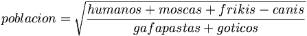

De: La Frikipedia, la enciclopedia extremadamente seria.
De: La Frikipedia, la enciclopedia extremadamente seria. De: La Frikipedia, la enciclopedia extremadamente seria.

|
FRIKIPEDIA QUIERE QUE ESTA DEFINICIÓN
PASE A SER UN ARTÍCULO FRIKIPÉDICO La información contenida en este artículo es una mínima parte de su jugo total, así que ponte los guantes, saca el tupperwere y empieza a exprimir el tema. Si lo haces serás recompensado con una galleta en almíbar y algo más. |
La población se define como la cantidad de seres inteligentes que viven dentro de un determinado territorio.
Lamentablemente, como todos sabemos, en la anchos.
Con el fin de la humanidad antes siquiera de que esta existiese, aparece una roca malvada que planea conquistar el universo, pero apareció un caballo mutante que le dio una patada en los cojones que hizo que muriera la roca. Con la muerte de la roca los delfines verdes voladores lograron conquistar todo el mundo a nivel nación, pero había un problema grave, el planeta tierra, entonces deciden crear la población para acabar aquel planeta, justo cuando iban a lograr su cometido apareció la roca y les lanzó una bomba provocando la extinción de los delfines y la roca, además de miles de pepinillos.
Con el tiempo fueron evolucionando, primero tenían la forma de un salero, luego de un limón y luego de un hámster. Hasta que llegaron a conquistar el mundo, pero el mundo les dio una patada en los cojones y se tuvieron que rendir. Entonces construyeron bases solares en el planeta tierra para calmarlo.
En la actualidad la población es regida por los videojuegos y las bocinas de varias computadoras, esperando el momento de poder volver a volar y destruir a todos los guantes de todo el mundo. Ahora prefieren no cantar dos veces seguidas.
La formula que usaron los delfines era la siguiente:
La sencilla fórmula que se sigue para el cálculo de la población es la siguiente:

La Demografía, porque para conseguir la versión completa hay que pagar.
También se le llama población a cualquier inteligentes. Ejemplos de poblaciones terrestres son continente.
Autor(es):